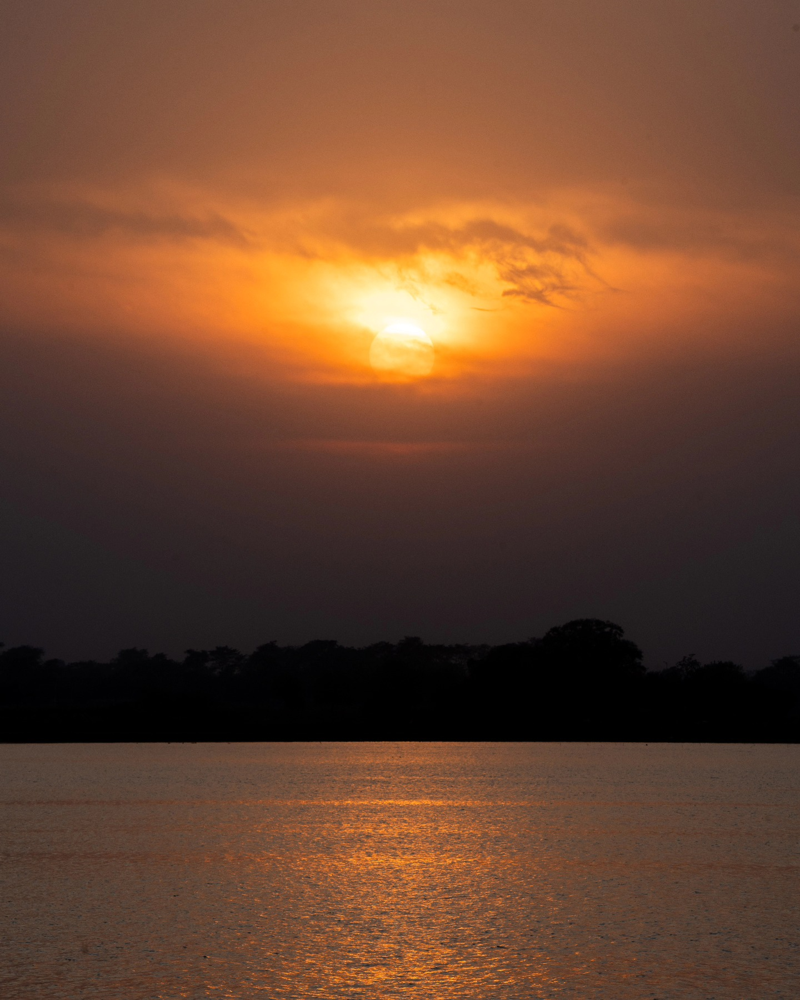
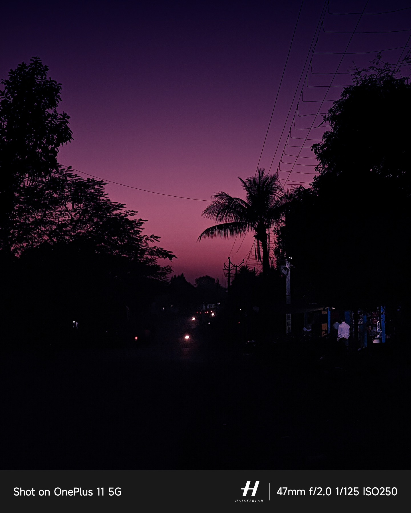
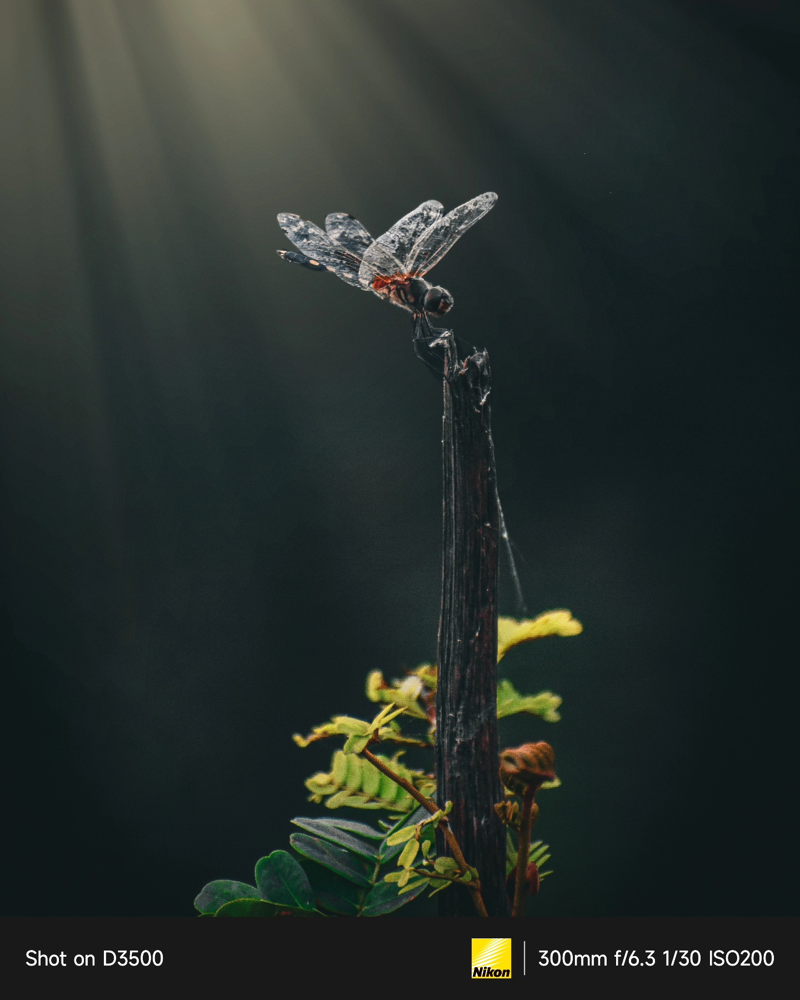
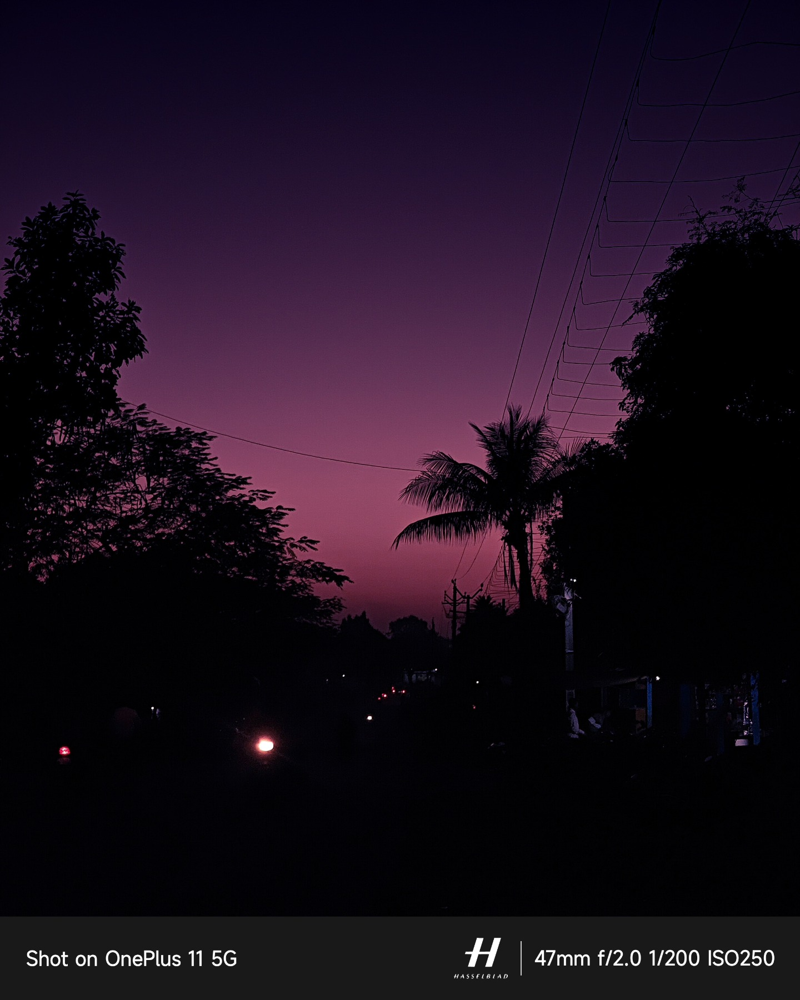

The Collection
Between darkness and light, silence speaks
Photo Series
Stories told through careful patience

The Milky Arc
A collection of long-exposure nights chasing the galactic core across India's darkest skies.

Empty Hours
Minimal landscapes at dawn and dusk — places where time forgets to move.
Neon Solitude
City lights and empty streets — finding silence in the urban sprawl after midnight.

The Silence Seeker
I am drawn to the hours when the world goes quiet — the 3 AM expanses, the fog-soaked valleys, the desert floors carpeted in starlight.
Photography, for me, is an act of patience. Of waiting for the light to become something that can't be explained — only felt. Each frame is an attempt to bottle a sensation: the weight of the cosmos overhead, the hush of an empty road, the blue before sunrise that exists nowhere else.
I shoot primarily with a Sony A7 IV — a camera that captures light the way I experience it: fully, without compromise.
Let's Create
Something Quiet
Available for collaborations, commissions, and conversations about the night sky.